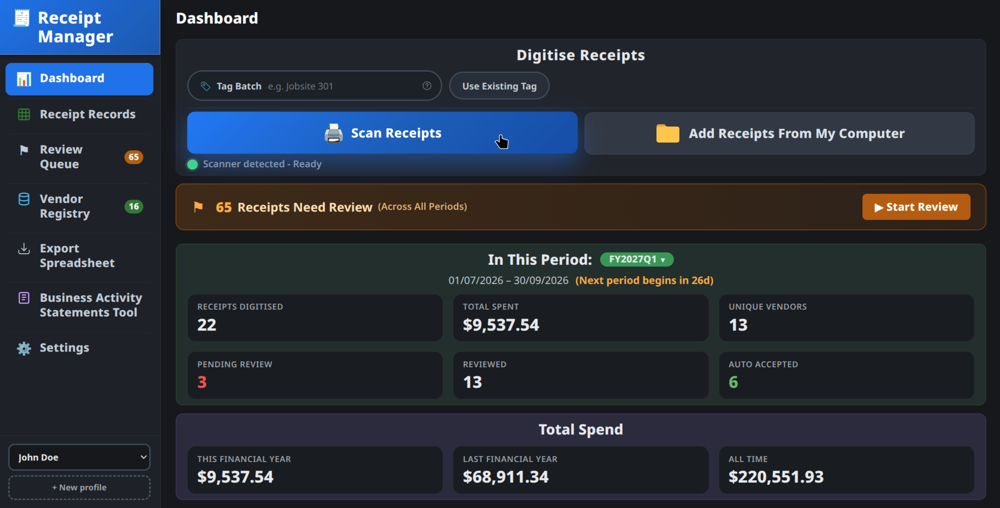
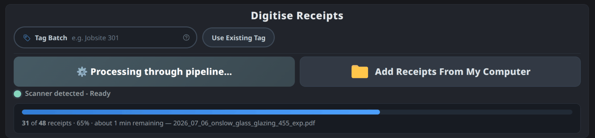
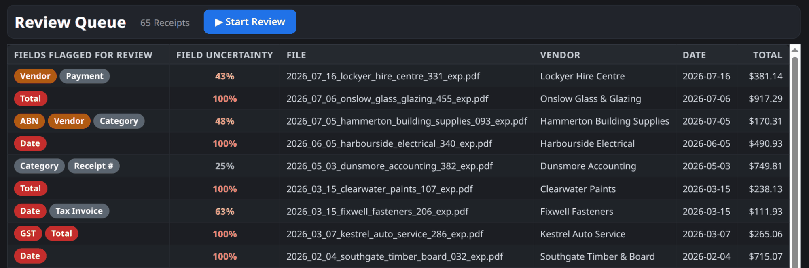
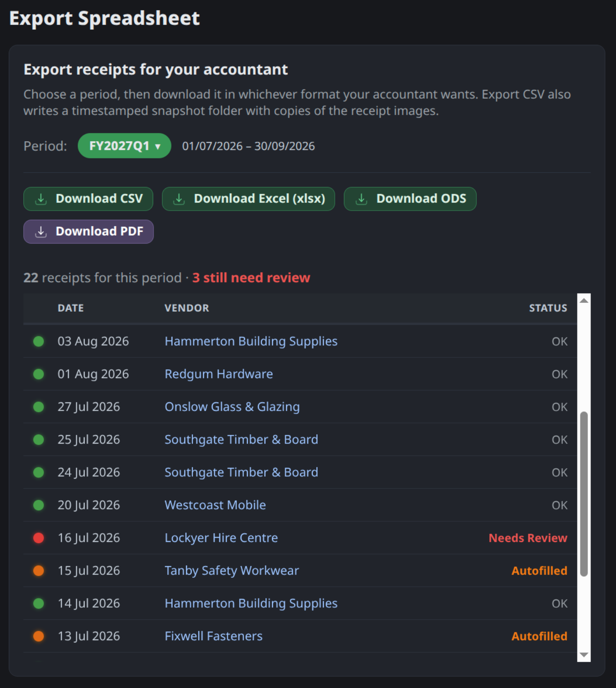
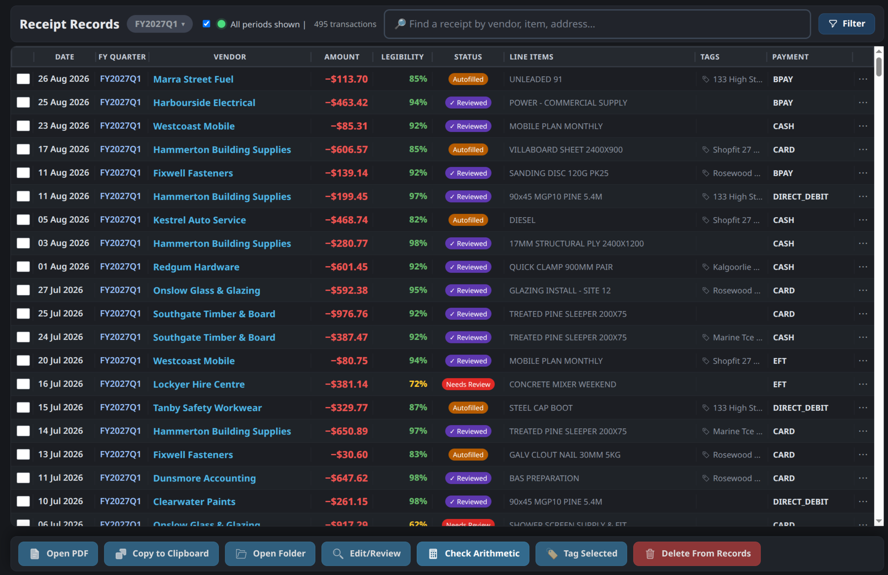

Receipt Manager replaces the job you never wanted: a year of receipts, one at a time, into a spreadsheet, by hand.
{kind=link}

Instead, you scan the stack and hand it off to the program. When you come back, the shop, the date and the amount have been read off each one, and you check only what the program could not read clearly. One click exports the spreadsheet your accountant needs, with every original receipt linked to its row.
{kind=link}

Misread numbers are caught before filing, so what ends up in your records is right the first time.
If you need to correct it, it solves that problem automatically next time, tailoring itself to your scenario and cutting the time you spend in review.
{kind=link}

Your receipts cannot be leaked or lost by a company, because there is no middle man. Receipt Manager is free and runs entirely on your computer, so your business stays yours.
{kind=link}

On Demand
Do not risk mistakes and sunk time on calculations. The tax figures for every quarter are worked out already, for you to copy whenever you need them. The afternoon you spent naming files last year is done for you this year.
Finding a receipt is now as simple as searching anything you can remember about it. The shop, what you bought, the address, how much it cost — one is enough to pull it up.
{kind=link}

Looks Out For You
Send the right record the first time. If you scanned something twice, it catches it; if you missed something, it catches that too. When you use Receipt Manager, you are not the only one looking out for you.